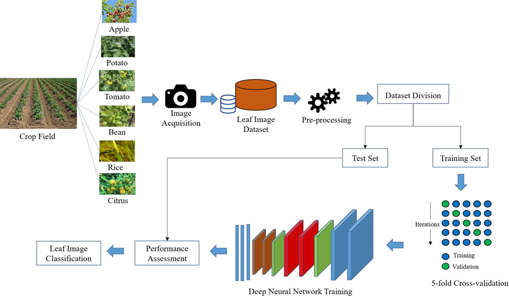
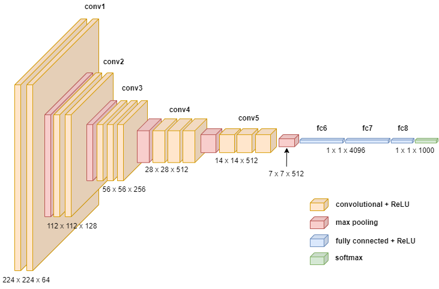

🌿 Plant Disease Detection & Prediction

Overview
This project is a machine learning application designed to predict plant diseases from images using a Convolutional Neural Network (CNN). The goal is to help farmers and agriculturists quickly identify diseases in their crops and take appropriate action to mitigate losses.
Features
- Automated Disease Detection: Upload an image of a plant leaf to receive an immediate diagnosis.
- User-friendly Interface: Easy-to-use web interface for uploading images and viewing predictions.
- Accurate Predictions: Trained on a large dataset to ensure high accuracy.
Dataset
The dataset consists of 80K RGB images of plant leaves categorized by disease type, split as:
- Training Set: 70,292 images (80%)
- Test Set: 17,573 images (20%)
📦 Dataset Link: Tap Here

Image Preprocessing

Model Architecture

- Convolutional Layers: Extract image features.
- Pooling Layers: Reduce dimensionality.
- Fully Connected Layers: Perform classification.
- Softmax Layer: Output disease probabilities.

📈 Model Loss Graph
Training used the Adam optimizer over 10 epochs, resulting in high accuracy and smooth convergence.

📊 Model Accuracy Graph

🔍 Sample Output Screenshots


⚙️ Installation
Follow the steps below to set up the project locally:
📋 Prerequisites
- Python 3.7+
- TensorFlow 2.0+
- Flask
- OpenCV
📥 Clone the Repository
git clone https://github.com/PritishDoc/plant-disease-detection.git
cd plant-disease-detection
🌐 GitHub Repository
🔗 View on GitHub